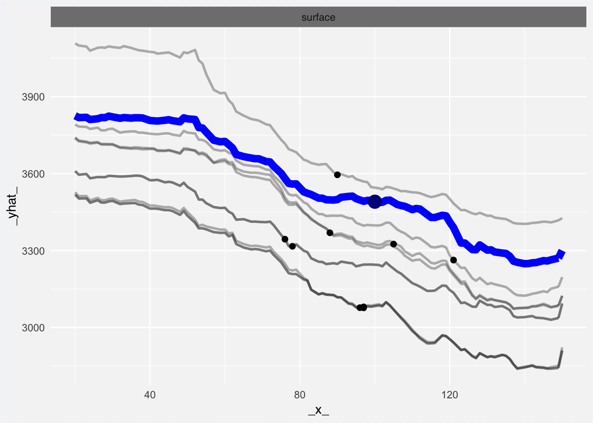
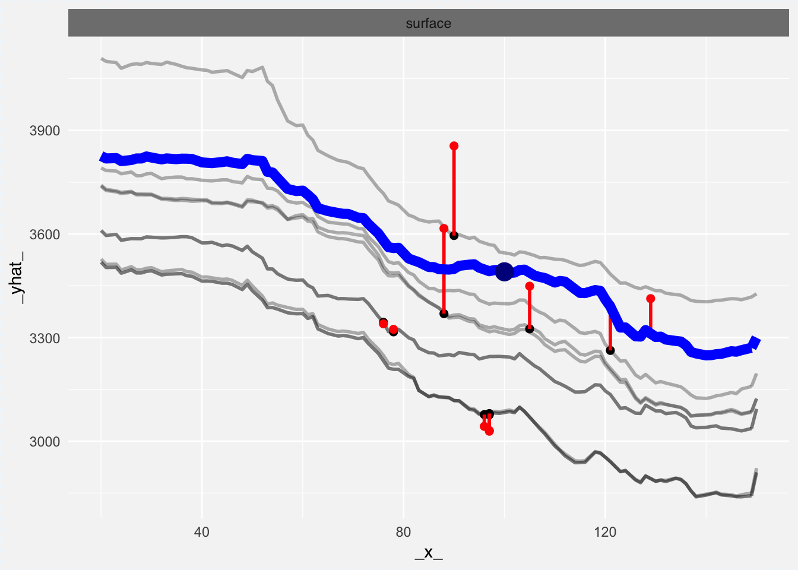
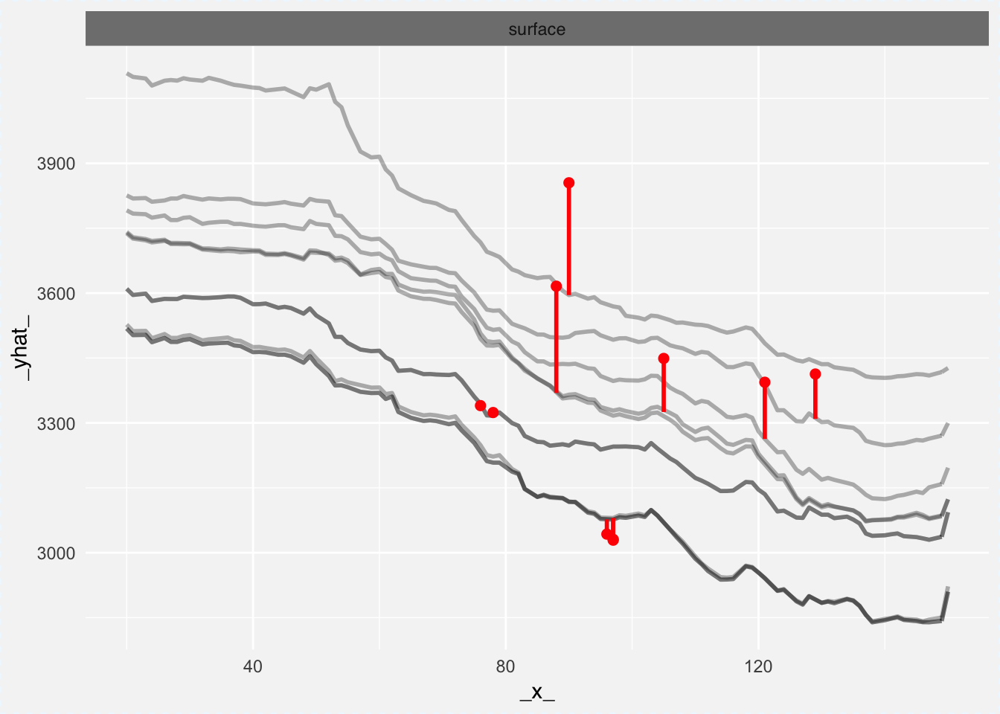

5.2 Exploration of local structure with Ceteris Paribus profiles
Profiles presented in the Section 5.1 are also useful for exploration of the local structure of a model. This may be usefull to
Figure 5.2: Red point stands for the new observation, while green points stand for it’s neighbours from validation data.
- assess local fitness of a model,
- assess stability of a model,
- assess local additivity of a model.
To assess the local structure of a model we use points from validation data that are close to the point of interest (see Figure 5.2). Close mean here close in a metric d(x,y) where the metric may be specified by a user. By default it’s Gower’s distance implemented in teh gower package (van der Loo 2017van der Loo, Mark. 2017. Gower: Gower’s Distance. https://CRAN.R-project.org/package=gower.). Gower distance takes into account both quantitative and qualitative variables.
Once neighbors are identified, one can plot profiles for every neighbor. In the Figure 5.3 the blue curve shows Ceteris Paribus profiles for a variable of interest, while all other profiles are for the neighbors.
Profiles are parallel here, what suggests that model is additive in respect to the surface variable. Profiles are not far from each other, what suggests that the observation is stable.
Figure 5.3: Blue point stands for the point of interests. Black points are predictions for the neighbours. The blue curve is the Ceteris Paribus profile for the blue observation. Grey profiles are for neighbours.
An interesting extension of such plots is so called Wangkardu Plot in which additionally we also present true labels for neighbors. Since neighbors come from validation data, then we may plot also residuals for these predictions.
In the Figure 5.4 below we highlight residuals with red intervals. Residuals here are relatively small what suggest that around the point of interest the fit is relatively good.
Figure 5.4: Blue point stands for the point of interests. Red points are the neighbours. The blue curve is the Ceteris Paribus profile for the blue observation. The red intervals are residuals - differences between the true label and the model response. The grey profiles are Ceteris Paribus profiles for neighbours.
5.2.0.1 How to do this in R?
First, one need to identify neighbors for selected points of interest. This can be done with the select_neighbours() function. By default it is using the gower distance, but one may change it with the distance argument.
Here we select 10 closes points.
neighbours <- select_neighbours(apartmentsTest, observation = new_apartment, n = 10)
head(neighbours)## m2.price construction.year surface floor no.rooms district
## 5668 3413 2000 129 1 4 Bemowo
## 5332 3031 1988 97 2 4 Bemowo
## 1379 3855 2000 90 1 3 Bemowo
## 1681 3324 1990 78 1 4 Bemowo
## 7369 3340 1990 76 1 4 Bemowo
## 2050 3449 2004 105 3 4 BemowoProfiles for neighbors can be calculated with the ceteris_paribus() function. We also supply here true labels, they will be useful to calculate residuals
profile_rf_neig <- ceteris_paribus(explainer_rf,
observations = neighbours,
y = neighbours$m2.price)One profiles are calculated, one can plot them with the generic plot() function.
Here we additionally specify color for residuals, and turn on presentation of residuals, but not the observations.
plot(profile_rf_neig,
selected_variables = "surface", size_residuals = 2,
color_residuals = "red", show_residuals = TRUE, show_observations = FALSE) 
It is useful to add an additional layer that present the Ceteris Paribus profile for the point of interest.
This profile is highligheted here as a blue curve.
plot(profile_rf_neig,
selected_variables = "surface", size_residuals = 2,
color_residuals = "red", show_residuals = TRUE, show_observations = FALSE) +
ceteris_paribus_layer(profile_rf, size = 3, alpha = 1, color = "blue",
selected_variables = "surface") 
Merging of profiles is a very useful technique. Below we add a new layer with the average model response foot model predictions. The black line marks the average response from neighbors.
plot(profile_rf_neig,
selected_variables = "surface", size_residuals = 2,
color_residuals = "red", show_residuals = TRUE, show_observations = FALSE) +
ceteris_paribus_layer(profile_rf, size = 3, alpha = 1, color = "blue",
selected_variables = "surface") +
ceteris_paribus_layer(profile_rf_neig, size = 3, alpha = 1, color = "black",
aggregate_profiles = mean, show_observations = FALSE,
selected_variables = "surface")